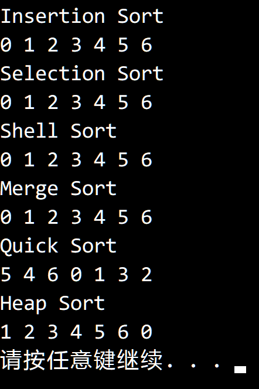

© 2019 《算法（第四版）》C# 题解 | Provided By 沈星繁
搜索解答
目前已完成到 2.5
2.5.11
上次更新：2019-02-13
发现了题解错误/代码缺陷/排版问题？请点这里：如何：提交反馈 。
题目
2.5.11
描述排序结果的一种方法是创建一个保存 0 到 a.length - 1 的排列 p[]，
使得 p[i] 的值为 a[i] 元素的最终位置。
用这种方法描述插入排序、选择排序、希尔排序、归并排序、快速排序和堆排序
对一个含有 7 个相同元素的数组的排序结果。
解答
结果如下，其中快速排序去掉了一开始打乱数组的步骤：

只有快速排序和堆排序会进行交换，剩下四种排序都不会进行交换。
插入排序在排序元素完全相同的数组时只会进行一次遍历，不会交换。
选择排序第 i 次找到的最小值就是 a[i] ，只会让 a[i] 和 a[i] 交换，不会影响顺序。
希尔排序和插入排序类似，每轮排序都不会进行交换。
归并排序是稳定的，就本例而言，只会从左到右依次归并，不会发生顺序变化。
快速排序在遇到相同元素时会交换，因此顺序会发生变化，且每次都是对半切分。
堆排序在删除最大元素时会将第一个元素和最后一个元素交换，使元素顺序发生变化。
代码
using System;
using SortApplication;
namespace _2._5._11
{
class Program
{
/// <summary>
/// 用来排序的元素，记录有自己的初始下标。
/// </summary>
/// <typeparam name="T"></typeparam>
class Item<T> : IComparable<Item<T>> where T : IComparable<T>
{
public int Index;
public T Key;
public Item(int index, T key)
{
this.Index = index;
this.Key = key;
}
public int CompareTo(Item<T> other)
{
return this.Key.CompareTo(other.Key);
}
}
static void Main(string[] args)
{
// 插入排序
Console.WriteLine("Insertion Sort");
Test(new InsertionSort(), 7, 1);
// 选择排序
Console.WriteLine("Selection Sort");
Test(new SelectionSort(), 7, 1);
// 希尔排序
Console.WriteLine("Shell Sort");
Test(new ShellSort(), 7, 1);
// 归并排序
Console.WriteLine("Merge Sort");
Test(new MergeSort(), 7, 1);
// 快速排序
Console.WriteLine("Quick Sort");
QuickSortAnalyze quick = new QuickSortAnalyze
{
NeedShuffle = false,
NeedPath = false
};
Test(quick, 7, 1);
// 堆排序
Console.WriteLine("Heap Sort");
Item<int>[] array = new Item<int>[7];
for (int i = 0; i < 7; i++)
array[i] = new Item<int>(i, 1);
Heap.Sort(array);
for (int i = 0; i < 7; i++)
Console.Write(array[i].Index + " ");
Console.WriteLine();
}
static void Test(BaseSort sort, int n, int constant)
{
Item<int>[] array = new Item<int>[n];
for (int i = 0; i < n; i++)
array[i] = new Item<int>(i, constant);
sort.Sort(array);
for (int i = 0; i < n; i++)
Console.Write(array[i].Index + " ");
Console.WriteLine();
}
}
}